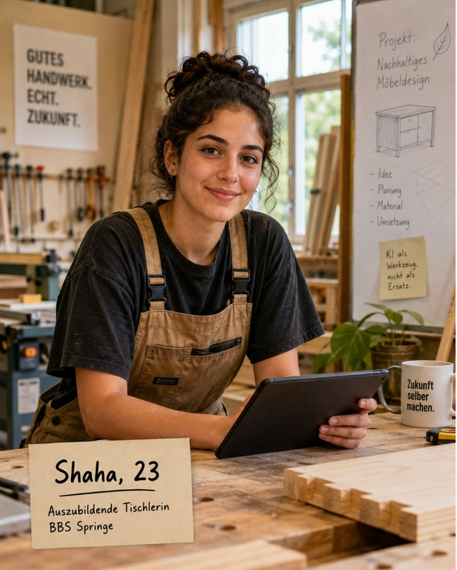
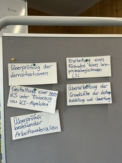
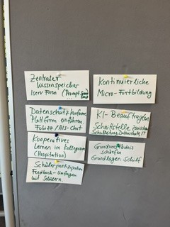
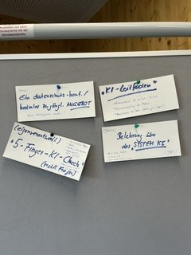
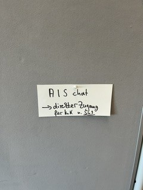
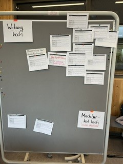

Worum es geht
Unser Auftrag
KI verändert, wie Schüler:innen lernen und wie wir unterrichten. Die AG KI hat einen Vorschlag erarbeitet, wie wir uns als Schule gemeinsam mit diesem Thema auseinandersetzen und weiterentwickeln können.
Das wollen wir als AG
- den Ist-Stand an unserer Schule festhalten
- die Interessen des Kollegiums wahrnehmen
- eine Vision und einen Handlungsrahmen entwickeln
- Projekte anstoßen, die sichtbar etwas verändern
Das wollen wir nicht
- eine Strategie für die Schublade
- eine Planung über fünf Jahre
- selbst Fortbildungen geben
Wie wir gearbeitet haben
Unser Weg
Wir arbeiten mit dem Golden Circle nach Simon Sinek. Zuerst klären wir, warum wir uns mit KI beschäftigen (WHY). Daraus leiten wir ab, wie wir handeln wollen (HOW) und was wir konkret tun (WHAT).
-
Sitzung 1 · 24. Juni 2026
WHY
Wir haben gesammelt, welche Veränderungen durch KI wir erleben, und geklärt, warum wir uns als Schule damit beschäftigen wollen. Daraus entstanden vier Handlungsfelder: Personalentwicklung, Lehren und Lernen, Recht und Ethik, Infrastruktur.
Denkende Runde · Clustern · WHY-Wand
-
Sitzung 2 · 26. August 2026
HOW
Wir haben den Nordstern an einer erfundenen Schülerin geprüft: Shaha. Mit der Kopfstand-Methode haben wir gefragt, was Shaha daran hindern würde, handlungsfähig zu werden. Aus den Antworten haben wir Leitsätze abgeleitet.
Orientierungsimpuls · Persona · Kopfstand
-
Sitzung 3 · 4. November 2026
WHAT
Wir haben Leitsätze überprüft, Maßnahmen entwickelt und nach Wirkung und Machbarkeit sortiert sowie erste Schritte formuliert.
Min Specs · Shift & Share · Matrix Wirkung × Machbarkeit
WHY · Sitzung 1
Warum wir uns mit KI beschäftigen
Was wir wahrnehmen
Zu Beginn haben alle aufgeschrieben, welche Veränderungen durch KI sie erleben. Die Aussagen zeigen Unsicherheit und Chancen zugleich. Eine Auswahl:
Rolle der Lehrkräfte
Wir fühlen uns alleine als Lehrkräfte.
Ist meine Rolle noch wichtig?
Arbeitserleichterung für Lehrkräfte.
Lernen verändert sich
Lernprozesse werden abgekürzt.
Die Aufgaben passen nicht mehr.
Schüler:innen trauen sich jetzt, alle Fragen zu stellen.
Blick in die Zukunft
KI führt zur Bildungsungerechtigkeit.
Die Halbwertzeit von Wissen sinkt.
KI löst sehr viel Unsicherheit aus.
Gesellschaft
Tech-Unternehmen haben Macht.
Es wird nicht hinterfragt.
Man kann sich jetzt viel Wissen aneignen.
Für uns ist KI deshalb mehr als ein neues Werkzeug. Unsere Leitfrage lautet: Wie wollen wir als Schule unter veränderten Bedingungen Bildung gestalten?
Unsere Anliegen
Auf unserer WHY-Wand wurden fünf Anliegen sichtbar:
- Befähigung
- Schüler:innen nutzen KI kompetent, kritisch und verantwortungsvoll.
- Orientierung
- Schule gibt jungen Menschen Halt im Umgang mit KI.
- Teilhabe
- KI-Kompetenz hängt nicht von den Voraussetzungen einzelner ab.
- Gestaltung
- Wir gestalten den Umgang mit KI aktiv mit.
- Zukunftsfähigkeit
- Wir entwickeln Lernen und Unterricht weiter.
Unser Nordstern
Unsere Schüler:innen sind in einer von KI geprägten Berufs- und Lebenswelt handlungsfähig.
In Sitzung 2 haben wir den Nordstern geschärft und an Shaha geprüft.

Shaha
Shaha, 23, macht eine Ausbildung zur Tischlerin an der BBS Springe. 2030 verlässt sie die Schule. Woran erkennen wir, dass sie im Umgang mit KI handlungsfähig ist? Shaha …
- setzt KI gezielt ein
- prüft Ergebnisse fachlich
- schützt ihre persönlichen Daten
- reflektiert ihre Nutzung
- versteht Grundprinzipien von KI
- nutzt KI verantwortungsbewusst
- wägt Chancen und Risiken ab
Shaha ist eine erfundene Person, das Bild ist KI-generiert.
Vier Handlungsfelder
Unsere Fragen haben wir vier Handlungsfeldern zugeordnet:
Personalentwicklung
- Wie unterstützen wir Kolleg:innen mit sehr unterschiedlichen Voraussetzungen?
- Welchen Mindeststandard brauchen wir?
Lehren und Lernen
- Wie verändern sich Unterricht, Aufgaben und Prüfungen?
- Was ist heute Leistung?
- Wie sieht die Rolle der Lehrkräfte aus?
Recht und Ethik
- Was gibt der rechtliche Rahmen vor?
- Wie gehen wir mit Datenschutz, Diskriminierung und der Macht großer Tech-Unternehmen um?
Infrastruktur
- Welche Zugänge, Geräte und Systeme brauchen wir?
- Wie finanzieren wir sie?
Aus der Sitzung


HOW · Sitzung 2
Wie wir handeln wollen
Der Kopfstand
Was müssten wir tun, damit Shaha garantiert nicht handlungsfähig wird? Unsere Antworten:
- KI verbieten
- alle Hilfsmittel verbieten
- KI ignorieren
- „Nutzt KI, wie ihr wollt“
- Knöpfchenkunde
- Jede Lehrkraft macht eigene Regeln
Aus dem Gegenteil sind unsere Leitsätze entstanden. In Sitzung 3 haben wir sie überprüft und gemeinsam bestätigt.
1Wir gehen vom Lernen aus.
Bei jeder Entscheidung über KI fragen wir zuerst, welches Lernen sie stärkt. KI ist bei uns Werkzeug und Lerngegenstand, eingebettet in handlungs- und kompetenzorientierten Unterricht.
2Wir stärken Lernprozess, Reflexion und eigenes Denken.
Das gilt im Unterricht wie bei Leistung und Prüfung. Ob mit oder ohne KI gelernt wird, entscheiden wir bewusst nach dem Lernziel.
3Beziehung und pädagogische Verantwortung bleiben beim Menschen.
KI kann unterstützen. Lernbegleitung, Ermutigung und pädagogische Entscheidungen liegen bei den Lehrkräften.
4Wir gehen gemeinsam vor.
Wir arbeiten nach gemeinsamen Zielen und transparenten, einheitlichen Regeln zur KI-Nutzung, die jeder Bildungsgang für sich konkretisiert. Lehrkräfte und Lernende entwickeln diese Regeln gemeinsam und machen offen, wo und wie sie KI nutzen. Niemand bleibt mit KI allein.
5Wir entwickeln uns in kleinen Schritten.
Innerhalb unserer gemeinsamen Regeln probieren wir KI aus, werten aus und passen an. Dabei leben wir eine positive Fehlerkultur.
6Wir sind alle Lernende.
Lehrende und Lernende entwickeln Kompetenzen zu KI. Dafür legen wir einen gemeinsamen Mindeststandard fest, und alle erhalten Unterstützung, um ihn zu erreichen.
7Wir greifen technologische Entwicklungen offen und kritisch auf.
Wir sorgen dafür, dass alle Lernenden gleichen Zugang zu KI haben. Wir achten auf Datenschutz und Nachhaltigkeit und treten Diskriminierung durch KI entgegen. Diese Themen machen wir auch im Unterricht zum Gegenstand.
Aus der Sitzung


WHAT · Sitzung 3
Was wir konkret tun
Wir haben Leitsätze überprüft, Maßnahmen entwickelt und nach Wirkung und Machbarkeit sortiert sowie erste Schritte formuliert.
Unsere Maßnahmen nach Wirkung und Machbarkeit
Wirkung: Wie viel bringt die Maßnahme Shaha näher an unseren Nordstern? Machbarkeit: Wie gut können wir sie unter unseren jetzigen Bedingungen umsetzen?
Jetzt angehen
Wirkung hoch, Machbarkeit hoch
- AIS-Chat einführen: datenschutzkonformer Zugang für alle Lehrkräfte und Schüler:innen, damit alle die gleichen Chancen haben
- KI-Leitfaden anhand unserer Leitsätze erstellen
- Niedrigschwellige Fortbildungsformate anbieten, z. B. KI-Sprechstunde oder digitale Lernsnacks
- Gemeinsame Leitlinien zur KI-Nutzung erarbeiten und den Bildungsgängen als Vorlage zur Verfügung stellen
- Teamtage je Bildungsgang zum Lernen im Kontext von KI
Planen
Wirkung hoch, aufwendig
- Lernsituationen überprüfen
- Prozessorientierte Leistungsformate entwickeln
Nebenbei erledigen
gut machbar, geringere Wirkung
- Kontakt zu anderen Schulen aufnehmen
- Gemeinsame SchiLF als Startpunkt
- Handreichung „Was ist erlaubt?“ gemeinsam mit der oder dem Datenschutzbeauftragten erstellen
Zurückstellen
geringere Wirkung, aufwendig
- Mindeststandard KI-Kompetenz für Lehrkräfte formulieren
- Regel zur Kennzeichnung von KI-Nutzung in Leistungen vereinbaren
Mindeststandard und Kennzeichnung bleiben Ziele unserer Leitsätze (Leitsatz 6 und 4). Wir sehen sie bewusst für einen späteren Schritt vor.
Weitere Ideen aus den Handlungsfeldern
Lehren und Lernen
- Neue Lernsituation unter Einbezug von KI-Aspekten gestalten
- Bestehende Arbeitsmaterialien überprüfen
- Grundsätze der Leistungsfeststellung und -bewertung überarbeiten
Personalentwicklung
- Zentraler Wissensspeicher in IServ-Foren
- Kontinuierliche Micro-Fortbildung
- KI-Beauftragte:r als Schnittstelle zwischen Schulleitung, Datenschutz und IT
- Kooperatives Lernen im Kollegium, z. B. Hospitation
- Schülerpartizipation: Feedback-Umfragen mit Schüler:innen
Recht und Ethik
- Eigenverantwortlicher „5-Finger-KI-Check“ mit Prüffragen
- Belehrung über das „System KI“
Aus der Sitzung










Wie es weitergeht
Übergabe an die Schulleitung
Mit dieser Seite übergibt die AG KI ihre Ergebnisse an die Schulleitung: Nordstern, Leitsätze und priorisierte Maßnahmen. Die Schulleitung entscheidet, wie es weitergeht. Die AG hat ihren Auftrag damit abgeschlossen und ist in dieser Form beendet.
Unsere Empfehlung
Ein Team Digitale Bildung, gebildet aus der bestehenden Arbeitsgruppe, begleitet die Umsetzung der Maßnahmen.
Drei Mitglieder der AG geben die Ergebnisse an die Schulleitung weiter. Eine Rückmeldung an die Gruppe ist bis zu den Weihnachtsferien vorgesehen.